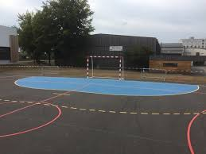
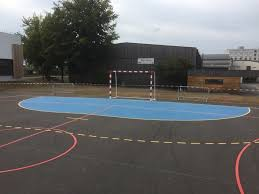

h.jpeg)
L'université Come n' learn se situe dans la zone de Titanyen, un grand espace, autrefois, très vide. C'est tout ce qui donne au campus son charme. C'est un endroit calme et paisible qui offre un état d'esprit de concentration et d'inspiration pour les étudiants.
Eloigné de la ville, l'université est obligée d'offrir beaucoup de services quotidiens aux étudiants qui leur eviteront de faire de grands déplacements.
Disponible à l'institution depuis seulement deux ans, la bibliothèque Francketienne met à disposition des étudiants des ouvrages de tous types pour les accompagner pendant leurs études et la rédaction de leurs mémoires.
Elle fonctionne tous les jours de 8h à 17h et ouvre ses pour tous les étudiants de n'importe quel horizon ayant un badge d'accès.
Come n'Eat se retrouve dans les locaux de chaque faculté et offre des plats delicieux et chauds préparés par la celèbre équipe de Tasty Food. Tout le monde peut avoir accès à l'espace mais certains étudiants modèles peuvent beneficier d'une carte speciale qui leur donne la possibilité d'acheter avec un rabais.
Come n'Learn reconnait l'impotance et l'utilité des exercices physiques. Pour cela les étudiants trouvent à leur disposition des terrains de football, de basket et de handball. L'espace de sport est réservé pour les étudiants de tous genres. Il y a aussi un club de foot pour les garcons et de handball pour les filles. Depuis 2019, l'institution participe aux championnats sportifs.

 

L'institution comprend la difficulté des étudiants à venir en cours dans un endroit aussi éloigné. Depuis 2020, un espace a été reservé sur le campus pour construire un grand dortoir pour les étudiants désireux de vivre sur le campus. Actuellement le dortoir est en construction mais on peut déjà reserver sa place dans le dortoir pour les années à venir.Depuis 2019, un dortoir à moins de 1500 mètres de l'université a commencé à etre bati. Les travaux ont cessé à cause de la covid-19 et ont repris en janvier 2021. Les etudiants pourront desormais sejourner près du campus et eviter tout retard ou toute absence à cause d'uun quelconque probleme socio plitique.
Les etudiants l'ont surnommé ainsi parce qu'ils y trouvent la tranquilité pour eudier et travailler. C'est un grand espace recouvert par une pelouse fraiche et propre où tout le monde peut se reposer.
C'est l'endroit péféré des étudiants.
Visite virtuelle du campus très bientôt sur le site de Haiti Virtual Tour